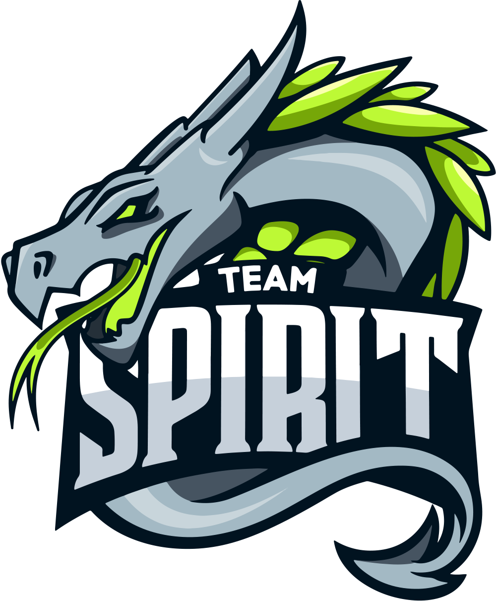
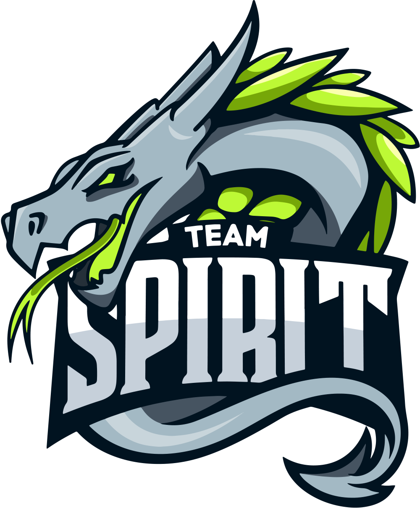
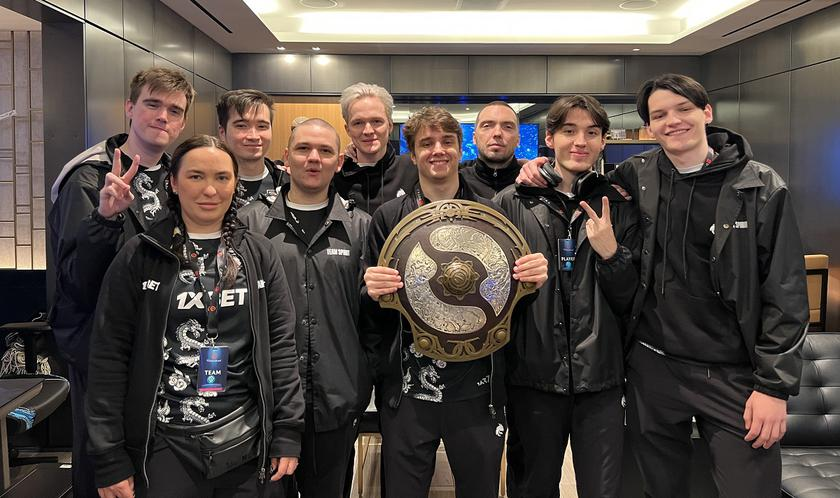
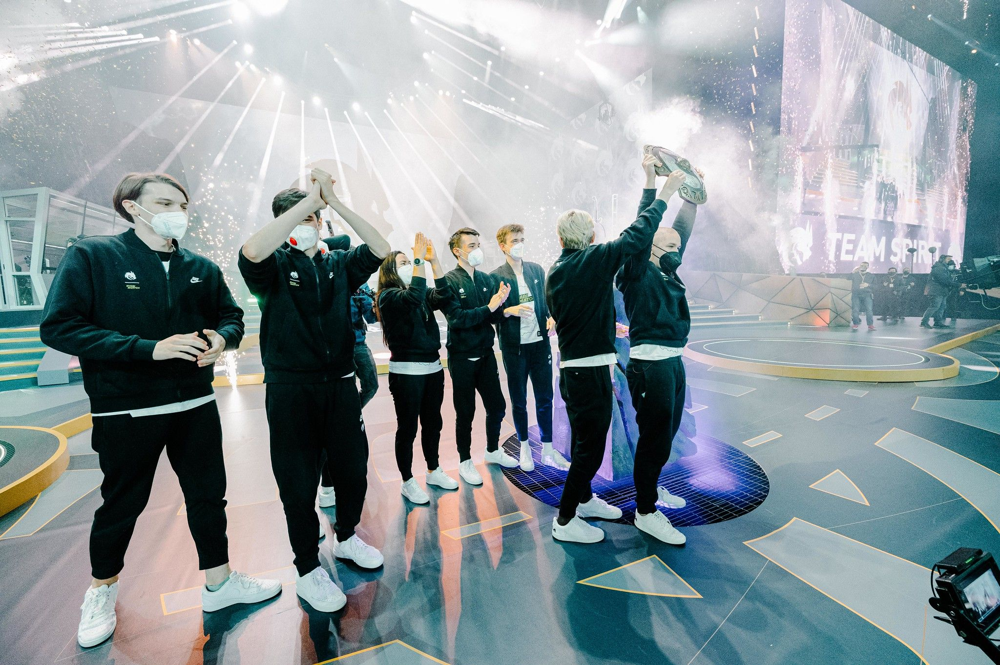
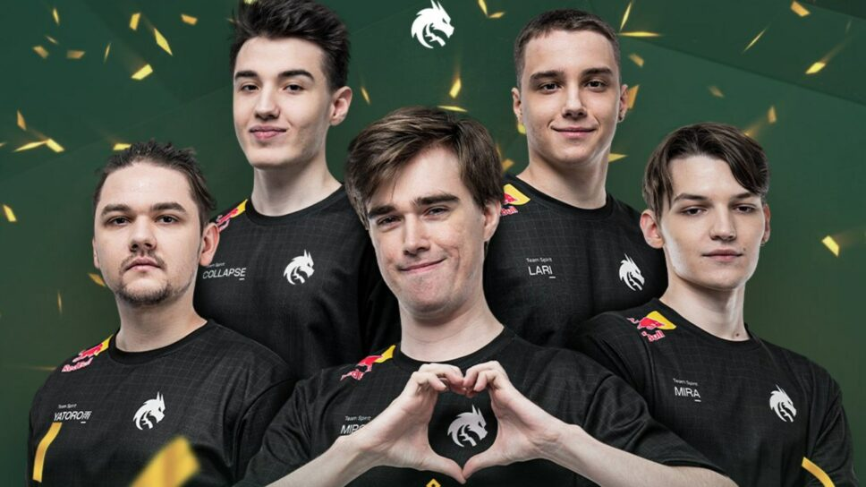
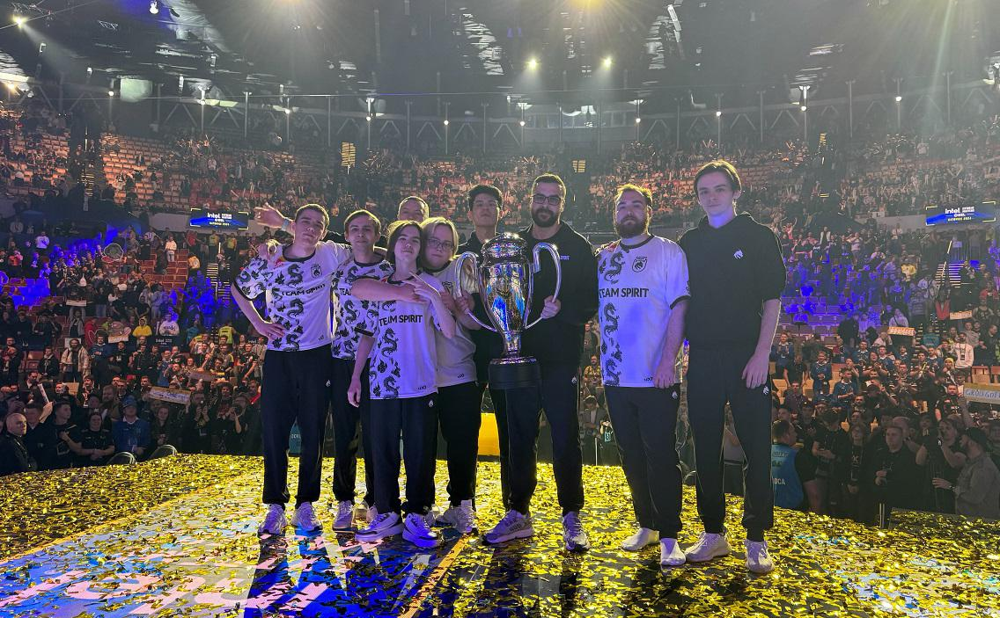
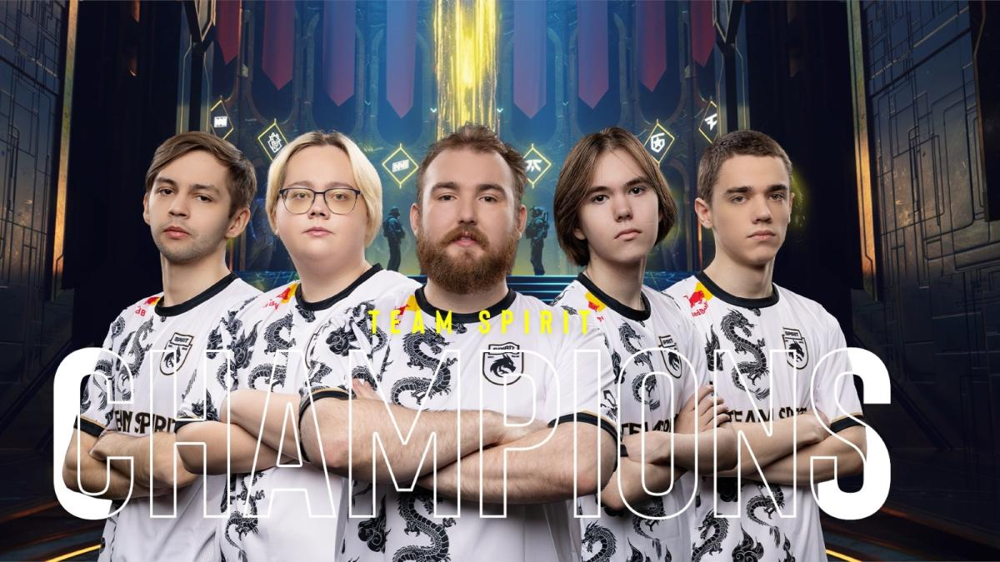
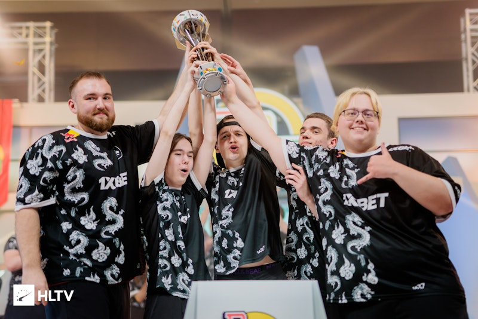

Об организации:
 

Team Spirit — самая титулованная российская мультигейминговая киберспортивная организация,основанная в 2015 году и имеющая составы по Dota 2, Counter-Strike 2. Команды в обеих дисциплинах является одними из лучших. В Counter-Strike 2 же команда вышла на высочайший уровень совсем недавно, выиграв 2 крупных турнира подряд: BetBoom Dacha Dubai 2023 и Intel Extreme Masters Katowice 2024. Всего Team Spirit заработала 27,384,259 $ в чемпионатах по Dota 2 и $1,829,153 в чемпионатах по Counter-Strike.
В честь победы Team Spirit на The International 10, турнире с самым большим призовым фондом в истории киберспорта, Valve - компания, являющаяся создателем дисциплин Dota 2 и Counter-Strike и одновременно организаторам серии турниров The International, сняла документальный фильм под названием True Sight, в котором можно прочувствовать от первого лица всю ту ответственность, которую взложили на ребят, все те эмоции которые они пережили.
DOTA 2
В 2021 году Team Spirit, являясь одними из главных аутсайдеров, стала победителем крупнейшего международного турнира по Dota 2 The International 10, получив рекордный на данный момент выигрыш в киберспорте — 18,208,300 $. А в 2023 году повторили свой успех и стали вторыми двукратными чемпионами мира по Dota 2 в истории, забрав 1,521,362 $. Также в 2023 Году команда выиграла крупнейший турнир в истории Dota 2, не явлиющийся The International : Riyadh Masters.
  Текущий состав команды, их позиции и дата присоединения к команде :
Илья 'Yatoro' Мулярчук --- Керри --- 2020-12-19
Денис 'Larl' Сигитов --- Мидер --- 2022-12-08
Магомед 'Collapse' Халилов --- Оффлейнер --- 2020-12-19
Мирослав 'Mira' Колпаков --- Частичная Поддержка --- 2021-03-??
Ярослав 'Miposhka' Найдёнов --- Поддержка(капитан) --- 2020-12-19
Айрат 'Silent' Газиев --- Тренер --- 2020-12-19
Counter-Strike 2
Intel Extreme Masters Katowice 2024 - 1 место
BetBoom Dacha Dubai 2023 - 1 место
  Текущий состав команды, их роли и дата присоединения к команде :
Леонид 'Chopper' Вишняков --- Капитан --- 2019-03-03
Борис 'magixx' Воробьев --- Люркер --- 2019-09-26
Мирослав 'zont1x' Плахотя --- Саппорт --- 2023-07-05
Данил 'donk' Крышковец --- Ентри-Фрагер --- 2023-07-05
Дмитрий 'shiro' Соколов --- Снайпер --- 2023-12-17
Сергей 'hally' Шаваев --- Тренер --- 2022-02-06
© 2024 Team Spirit